I rebuilt the birthday party from the assignment picture. The page has two floors, four rooms and 21 guest cards. I used jQuery to build the cards, solve the cases and animate the party.
Task 1 is in task1/. Task 2 is in task2/. Both pages use the same data and selector chains; Task 2 adds motion.js.
Assignment 6 / jQueryYerkebulan Abenov / IT-2511
Task 1: party data / Floor 2
The rows below follow the picture from left to right. Each room stores its name, floor and guests. Each guest stores a name, clothing color, arrival time, AITU status and items.
Balcony
#
Name
Color
Arrival
AITU
Items
1
Aigerim
green
20:45
Yes
cup, crumbs
2
Aliya
black
21:15
No
phone, cup
3
Madina
green
22:10
No
phone, bag, crumbs
4
Ivan
black
20:10
Yes
cup
Hall
#
Name
Color
Arrival
AITU
Items
1
Arman
yellow
20:35
No
bag, glasses
2
Sophia
purple
21:20
Yes
phone
3
Dias
green
19:45
Yes
Nothing
4
Bekzat
purple
20:55
No
bag, cup, crumbs
5
Aruzhan
blue
21:50
Yes
phone
6
Saule
green
21:25
No
glasses
How the data reaches the page
buildParty() creates the floors and rooms. makeGuest() creates each card with a local avatar, a clothing ring, item icons, arrival time and an AITU badge when needed.
The cards have color classes, an aitu class and data-name, data-time, data-color, data-aitu and data-things attributes. The cases search these rendered elements.
Before every case, I rebuild the page. In Task 1 this restores the picture. In Task 2 it uses the updated array, so moved guests stay in their new rooms.
Assignment 6 / jQueryYerkebulan Abenov / IT-2511
Task 1: party data / Floor 1
The rows below follow the picture from left to right. Each room stores its name, floor and guests. Each guest stores a name, clothing color, arrival time, AITU status and items.
Kitchen
#
Name
Color
Arrival
AITU
Items
1
Nurlan
red
19:40
Yes
phone, cup
2
Emma
black
20:15
No
bag
3
Timur
green
21:05
Yes
phone, bag, crumbs
4
Sergey
yellow
20:50
No
Nothing
5
Yerlan
red
21:40
Yes
glasses, phone
6
Kamila
green
20:05
No
cup
Living room
#
Name
Color
Arrival
AITU
Items
1
Daniel
blue
19:55
Yes
glasses
2
Zarina
green
21:10
No
bag, phone, crumbs
3
Natasha
yellow
20:30
Yes
Nothing
4
Askar
black
21:00
Yes
phone
5
Inkar
purple
20:20
No
bag
How the data reaches the page
buildParty() creates the floors and rooms. makeGuest() creates each card with a local avatar, a clothing ring, item icons, arrival time and an AITU badge when needed.
The cards have color classes, an aitu class and data-name, data-time, data-color, data-aitu and data-things attributes. The cases search these rendered elements.
Before every case, I rebuild the page. In Task 1 this restores the picture. In Task 2 it uses the updated array, so moved guests stay in their new rooms.
Task 1 / Selectors and traversalYerkebulan Abenov / IT-2511
Case 1: Who is in the hall?
Result
Arman, Sophia, Dias, Bekzat, Aruzhan, Saule
I selected every guest inside the hall. The room ID keeps this search separate from the other rooms.
jQuery chain
$('#hall .guest')
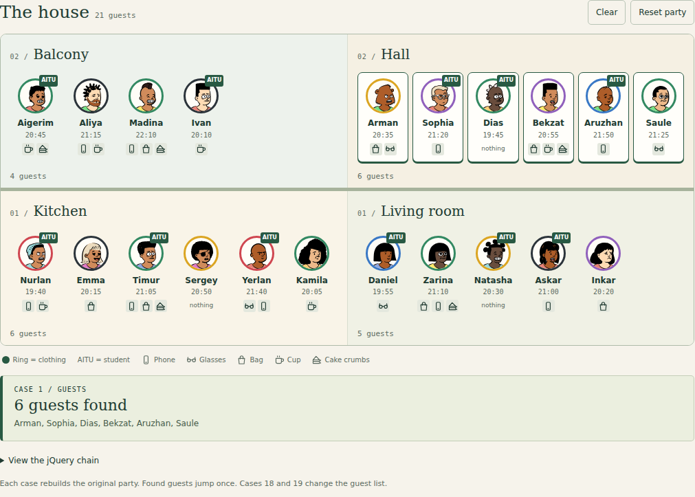
Task 1, case 1: highlighted matches and the result on the page.
Found guests jump once with two animate() calls: up by 9 pixels, then back to their starting position. Room cases highlight the room and animate its guests.
Task 1 / Selectors and traversalYerkebulan Abenov / IT-2511
Case 2: Yellow or purple clothing
Result
Arman, Sophia, Bekzat, Sergey, Natasha, Inkar
The comma combines the two clothing classes. A guest only needs to match one of the colors.
jQuery chain
$('.guest.yellow, .guest.purple')
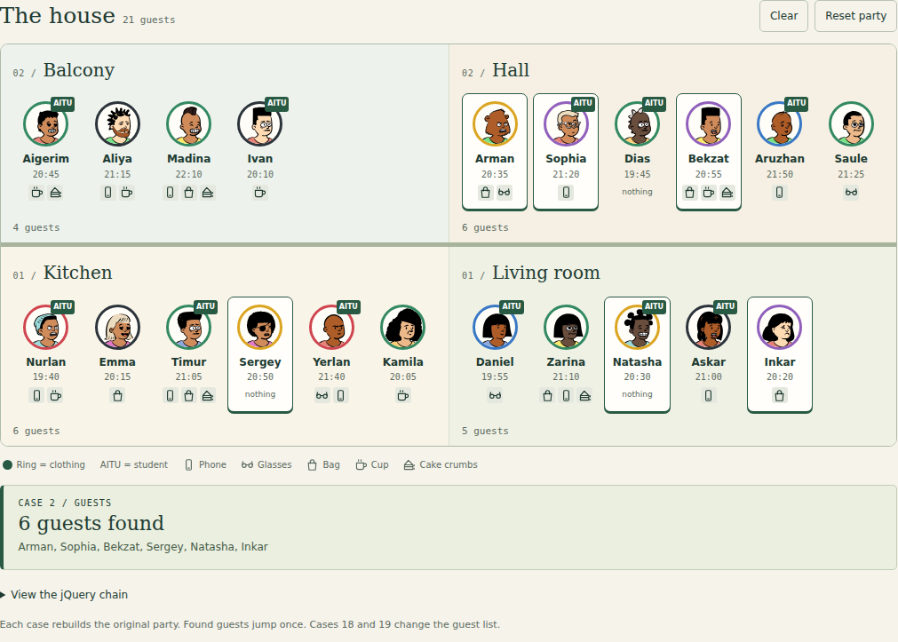
Task 1, case 2: highlighted matches and the result on the page.
Found guests jump once with two animate() calls: up by 9 pixels, then back to their starting position. Room cases highlight the room and animate its guests.
Task 1 / Selectors and traversalYerkebulan Abenov / IT-2511
Case 3: AITU students upstairs
Result
Aigerim, Ivan, Sophia, Dias, Aruzhan
I first found floor 2, then searched for AITU guests inside it.
jQuery chain
$('.floor[data-floor="2"]').find('.guest.aitu')
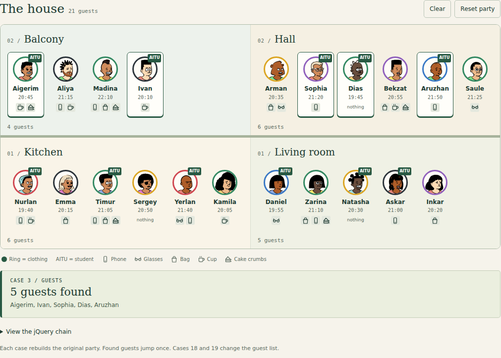
Task 1, case 3: highlighted matches and the result on the page.
Found guests jump once with two animate() calls: up by 9 pixels, then back to their starting position. Room cases highlight the room and animate its guests.
Task 1 / Selectors and traversalYerkebulan Abenov / IT-2511
Case 4: Glasses or a bag
Result
Madina, Arman, Bekzat, Saule, Emma, Timur, Yerlan, Daniel, Zarina, Inkar
:has() checks for an item icon inside a guest card. The comma means glasses or a bag.
Task 1, case 4: highlighted matches and the result on the page.
Found guests jump once with two animate() calls: up by 9 pixels, then back to their starting position. Room cases highlight the room and animate its guests.
Task 1 / Selectors and traversalYerkebulan Abenov / IT-2511
Case 5: Nothing with them
Result
Dias, Sergey, Natasha
:not(:has(.thing)) finds guests without any item icons. The word “nothing” does not have the thing class.
jQuery chain
$('.guest:not(:has(.thing))')
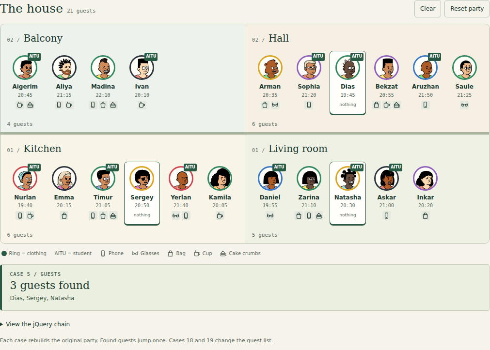
Task 1, case 5: highlighted matches and the result on the page.
Found guests jump once with two animate() calls: up by 9 pixels, then back to their starting position. Room cases highlight the room and animate its guests.
Task 1 / Selectors and traversalYerkebulan Abenov / IT-2511
Case 6: A phone, but no bag
Result
Aliya, Sophia, Aruzhan, Nurlan, Yerlan, Askar
The card must contain a phone icon and must not contain a bag icon.
Task 1, case 6: highlighted matches and the result on the page.
Found guests jump once with two animate() calls: up by 9 pixels, then back to their starting position. Room cases highlight the room and animate its guests.
Task 1 / Selectors and traversalYerkebulan Abenov / IT-2511
Case 7: Arrived from 20:30 to 21:00
Result
Aigerim, Arman, Bekzat, Sergey, Natasha, Askar
The times use HH:MM format, so string comparisons work here. Both boundary times are included.
Task 1, case 7: highlighted matches and the result on the page.
Found guests jump once with two animate() calls: up by 9 pixels, then back to their starting position. Room cases highlight the room and animate its guests.
Task 1 / Selectors and traversalYerkebulan Abenov / IT-2511
Case 8: After 21:00, not an AITU student
Result
Aliya, Madina, Saule, Zarina
I excluded AITU students first, then kept guests whose arrival time is later than 21:00.
Task 1, case 8: highlighted matches and the result on the page.
Found guests jump once with two animate() calls: up by 9 pixels, then back to their starting position. Room cases highlight the room and animate its guests.
Task 1 / Selectors and traversalYerkebulan Abenov / IT-2511
Case 9: Right next to Askar
Result
Natasha, Inkar
prev() and next() find Askar’s immediate neighbours. add() combines the two results.
Task 1, case 9: highlighted matches and the result on the page.
Found guests jump once with two animate() calls: up by 9 pixels, then back to their starting position. Room cases highlight the room and animate its guests.
Task 1 / Selectors and traversalYerkebulan Abenov / IT-2511
Case 10: Last in each room
Result
Ivan, Saule, Kamila, Inkar
Every guest list contains only guest cards. :last-child selects its final card.
jQuery chain
$('.guests > .guest:last-child')
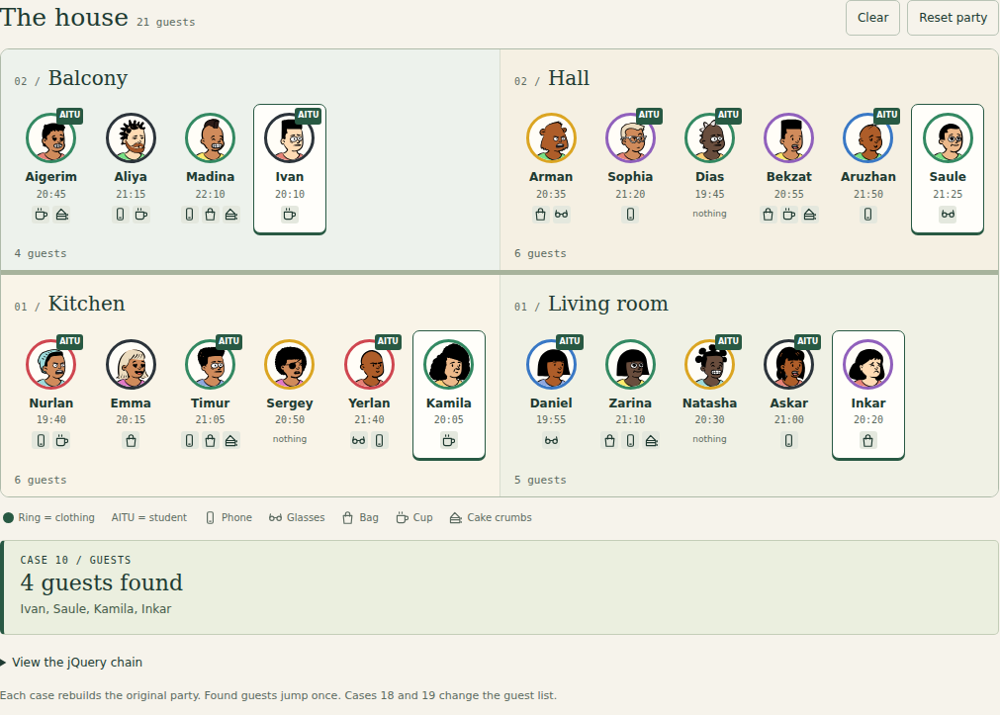
Task 1, case 10: highlighted matches and the result on the page.
Found guests jump once with two animate() calls: up by 9 pixels, then back to their starting position. Room cases highlight the room and animate its guests.
Task 1 / Selectors and traversalYerkebulan Abenov / IT-2511
Case 11: Third in each room
Result
Madina, Dias, Timur, Natasha
:nth-child(3) selects the third card in each room, counting from one.
jQuery chain
$('.guests > .guest:nth-child(3)')
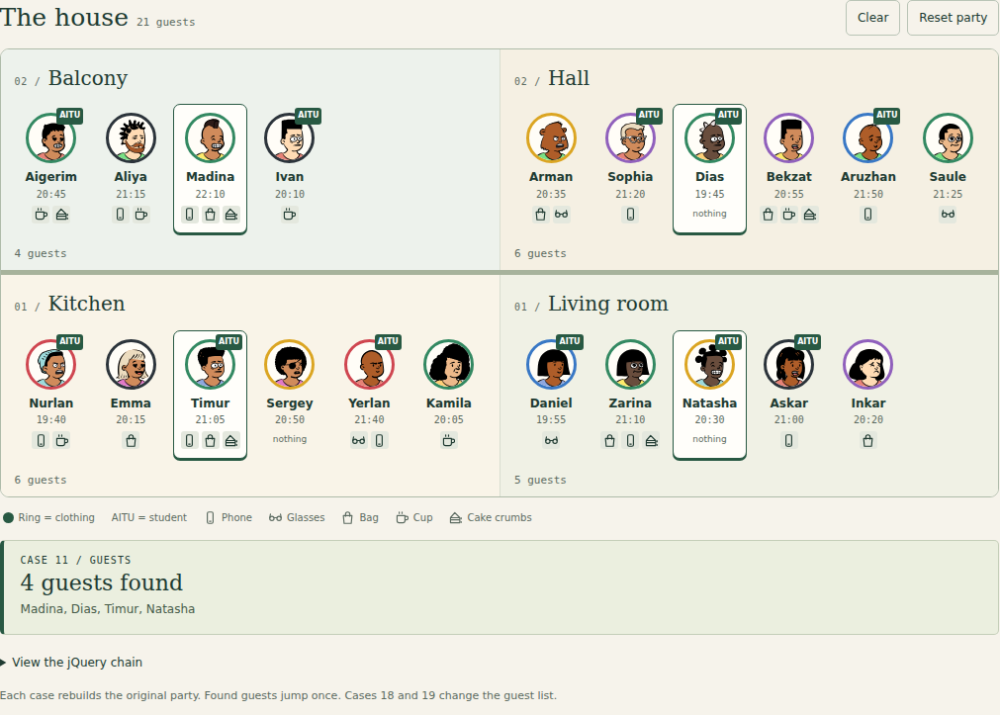
Task 1, case 11: highlighted matches and the result on the page.
Found guests jump once with two animate() calls: up by 9 pixels, then back to their starting position. Room cases highlight the room and animate its guests.
Task 1 / Selectors and traversalYerkebulan Abenov / IT-2511
Case 12: After Timur in his room
Result
Sergey, Yerlan, Kamila
nextAll() returns everyone after Timur in the same guest list.
jQuery chain
$('#timur').nextAll('.guest')
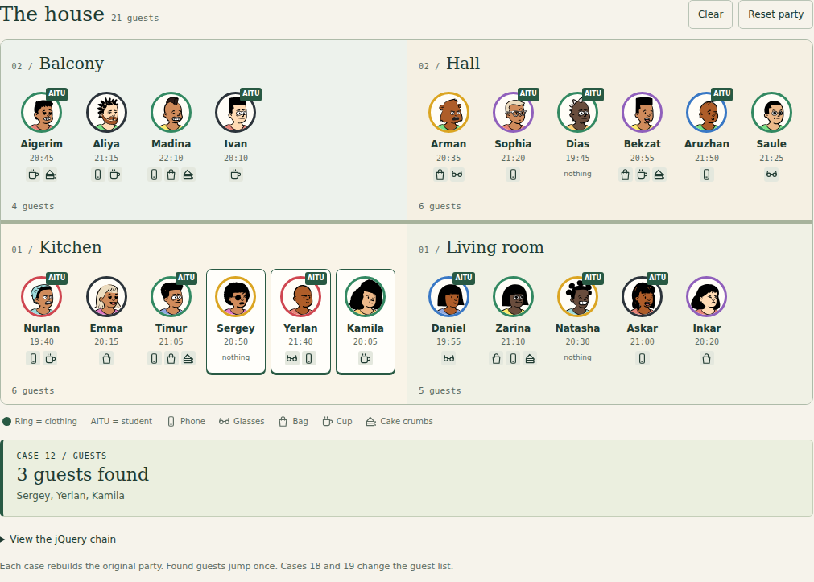
Task 1, case 12: highlighted matches and the result on the page.
Found guests jump once with two animate() calls: up by 9 pixels, then back to their starting position. Room cases highlight the room and animate its guests.
Task 1 / Selectors and traversalYerkebulan Abenov / IT-2511
Case 13: Right before someone in black
Result
Aigerim, Madina, Nurlan, Natasha
I found the guests in black, then selected the card immediately before each of them.
jQuery chain
$('.guest.black').prev('.guest')
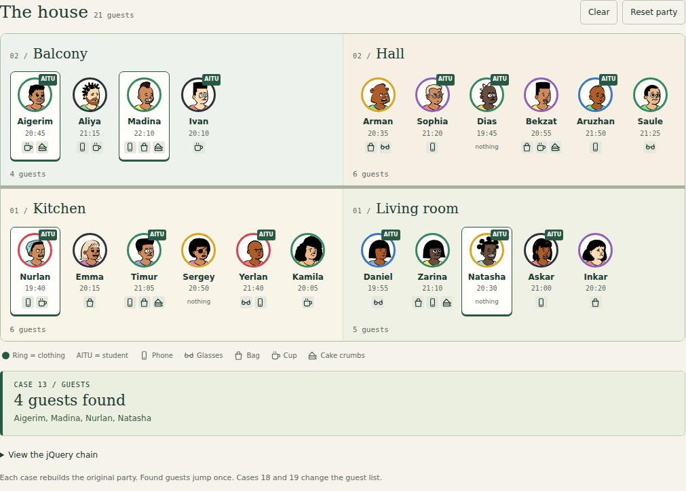
Task 1, case 13: highlighted matches and the result on the page.
Found guests jump once with two animate() calls: up by 9 pixels, then back to their starting position. Room cases highlight the room and animate its guests.
Task 1 / Selectors and traversalYerkebulan Abenov / IT-2511
Case 14: Which room has Aruzhan?
Result
Hall
closest() walks up from Aruzhan’s card to the room section. This case returns a room.
jQuery chain
$('#aruzhan').closest('.room')
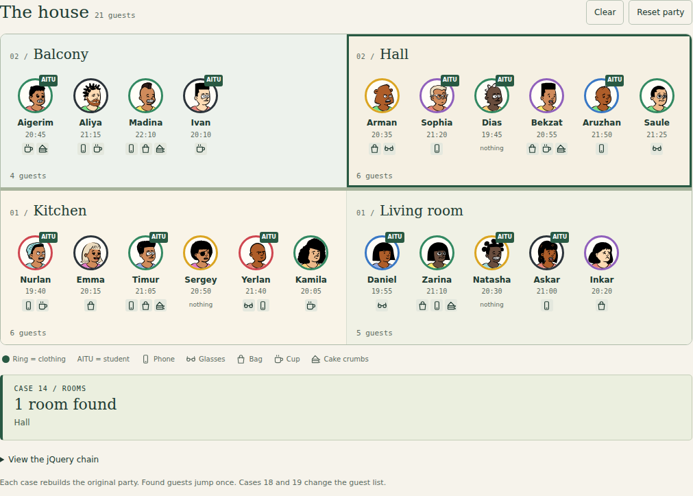
Task 1, case 14: highlighted matches and the result on the page.
Found guests jump once with two animate() calls: up by 9 pixels, then back to their starting position. Room cases highlight the room and animate its guests.
Task 1 / Selectors and traversalYerkebulan Abenov / IT-2511
Case 15: Rooms with fewer than 6 guests
Result
Balcony, Living room
I counted the guest cards inside each room and kept rooms with fewer than six.
Task 1, case 15: highlighted matches and the result on the page.
Found guests jump once with two animate() calls: up by 9 pixels, then back to their starting position. Room cases highlight the room and animate its guests.
Task 1 / Selectors and traversalYerkebulan Abenov / IT-2511
Case 16: A cup, but no glasses in the room
Result
Balcony
A matching room must contain a cup icon and must not contain any glasses icons.
Task 1, case 16: highlighted matches and the result on the page.
Found guests jump once with two animate() calls: up by 9 pixels, then back to their starting position. Room cases highlight the room and animate its guests.
Task 1 / Selectors and traversalYerkebulan Abenov / IT-2511
Case 17: First to arrive in each room
Result
Ivan, Dias, Nurlan, Daniel
I kept a guest only if no sibling in the same room had an earlier arrival time. Equal earliest times would all be kept.
Task 1, case 17: highlighted matches and the result on the page.
Found guests jump once with two animate() calls: up by 9 pixels, then back to their starting position. Room cases highlight the room and animate its guests.
Task 1 / Selectors and traversalYerkebulan Abenov / IT-2511
Case 18: Miras joins Askar and Inkar
Result
Miras
I created Miras’s card with the same builder as the other guests. insertAfter() puts him after Askar, and fadeIn() shows him smoothly.
Task 1, case 18: highlighted matches and the result on the page.
Found guests jump once with two animate() calls: up by 9 pixels, then back to their starting position. Room cases highlight the room and animate its guests.
Task 1 / Selectors and traversalYerkebulan Abenov / IT-2511
Case 19: Natasha goes home
Result
Natasha
fadeOut() hides Natasha first. Its callback removes her card from the page and updates the counts.
jQuery chain
$('#natasha').fadeOut(duration(350), function () {
$(this).remove();
updateCounts();
})
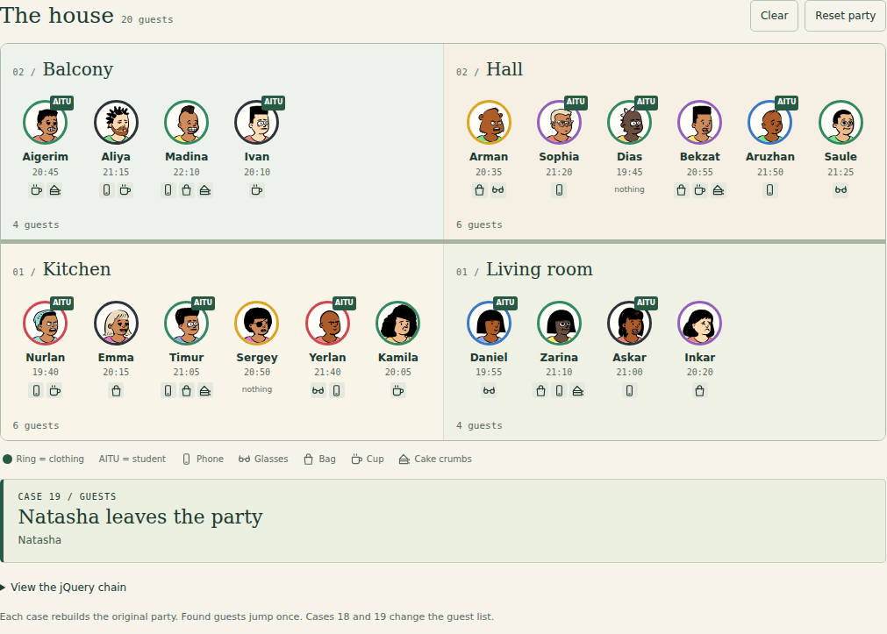
Task 1, case 19: highlighted matches and the result on the page.
Found guests jump once with two animate() calls: up by 9 pixels, then back to their starting position. Room cases highlight the room and animate its guests.
Task 1 / Selectors and traversalYerkebulan Abenov / IT-2511
Case 20: Who took the cake?
Result
Zarina — downstairs, after 21:00 and before 21:30; crumbs, no cup, and an AITU neighbour.
Zarina is downstairs in the living room. She arrived at 21:10, has cake crumbs and no cup, and stands next to Daniel and Natasha, who are AITU students.
jQuery chain
$('.floor[data-floor="1"] .guest:has(.thing-crumbs):not(:has(.thing-cup))')
.filter(function () {
const time = $(this).attr('data-time');
return time > '21:00' && time < '21:30';
}).filter(function () {
return $(this).prev('.guest.aitu').add($(this).next('.guest.aitu')).length > 0;
})
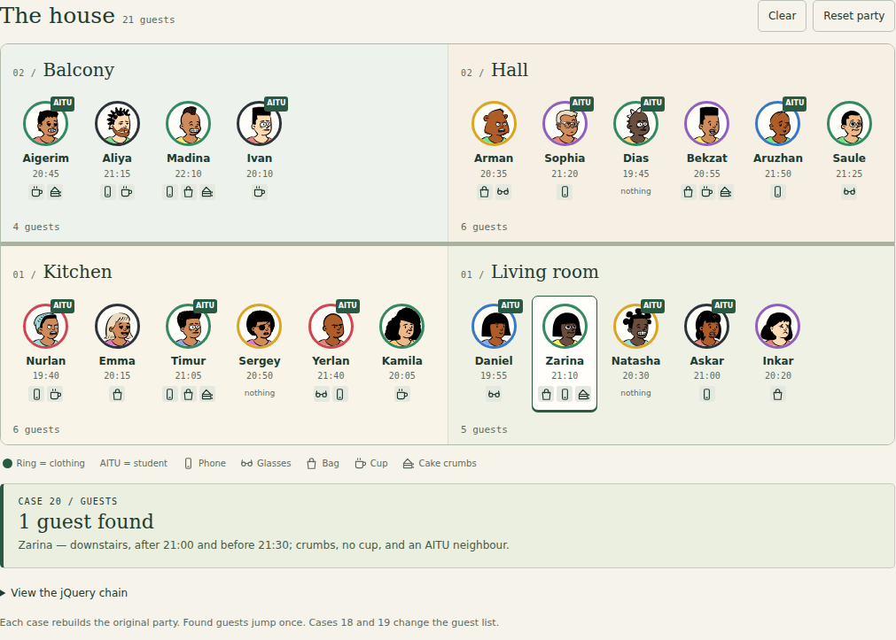
Task 1, case 20: highlighted matches and the result on the page.
Found guests jump once with two animate() calls: up by 9 pixels, then back to their starting position. Room cases highlight the room and animate its guests.
Task 2 / Effects and animationsYerkebulan Abenov / IT-2511
Task 2: spotlight and guest card
1. Spotlight
When I click a case, the matching guests stay at full opacity. I use fadeTo(300, 0.2) on the other guests. If a case returns rooms, I keep the guests inside those rooms bright. Clear stops old effects and fades everyone back to full opacity.
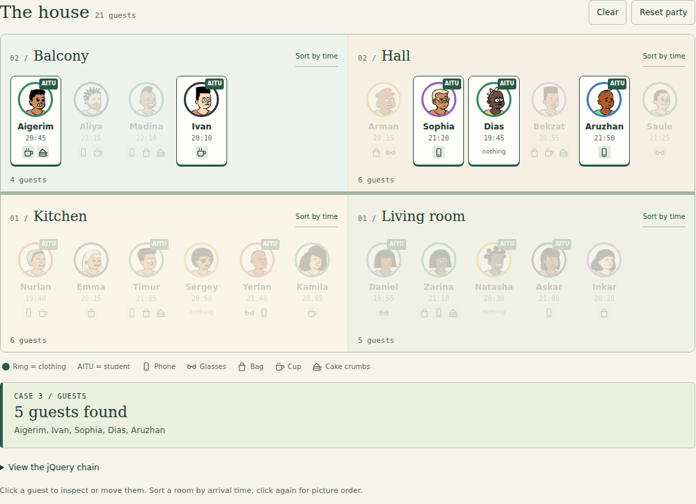
Case 3: only AITU students upstairs stay bright.Task 2 / Effects and animationsYerkebulan Abenov / IT-2511
Task 2: guest card
2. Guest card
The card starts at the avatar’s screen position. I animate its left, top, width and height to grow it into a centred dialog. It shows the arrival time, clothing, student status and items in words. Esc or an outside click shrinks it back to the avatar.
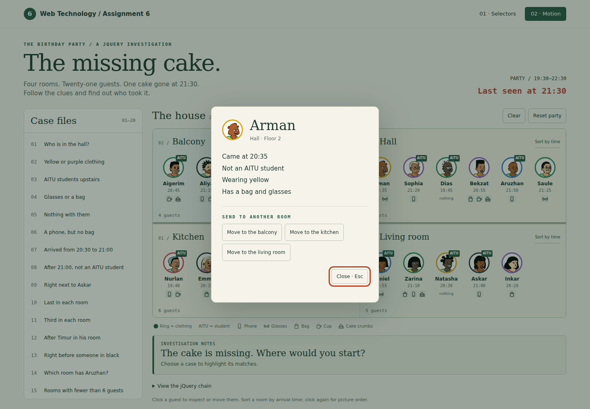
Arman’s guest card with information and move buttons.
Only one dialog can exist at a time. Opening another guest removes the previous dialog first. Tab stays inside the dialog while it is open.
Task 2 / Effects and animationsYerkebulan Abenov / IT-2511
Task 2: move and sort
3. Moving a guest
I clone the guest card and animate the clone from its old offset to the target room. The old card shrinks while a placeholder opens in the destination. At the end, I remove the clone, put the real card at the end of the new room and update the array.
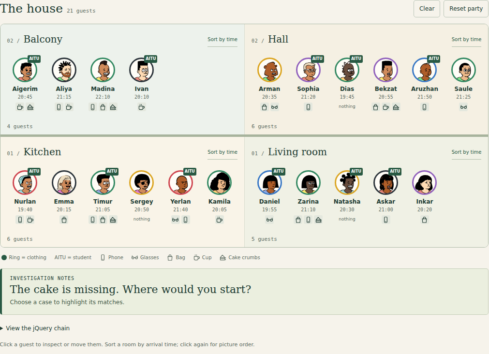
Arman is now last in the balcony. The hall has five guests.
After moving Arman, case 1 returns Sophia, Dias, Bekzat, Aruzhan and Saule. It no longer finds Arman.
Task 2 / Effects and animationsYerkebulan Abenov / IT-2511
Task 2: sort by time
4. Sorting by arrival time
I save the card positions, reorder the DOM by time, then animate each card from its old position to its new one. The second click restores the saved picture order.
Living room after sorting: Daniel, Inkar, Natasha, Askar, Zarina.
The times are 19:55, 20:20, 20:30, 21:00 and 21:10. Clicking again restores Daniel, Zarina, Natasha, Askar and Inkar.
Task 2 / TestingYerkebulan Abenov / IT-2511
Task 2: animation checks
5. Fast clicks
I stop queued effects before starting a new action. Sorting finishes the previous slide before measuring positions again. A new case finishes any active move before rebuilding the party. Dialog closing uses a version number so an old callback cannot remove a newer card.
Check
Observed result
Case 3, then Clear
Only upstairs AITU guests stay bright; Clear restores all 21 guests.
Click a guest, then Esc
The card grows from the avatar and shrinks back when closed.
Move Arman to the balcony
Arman ends at the balcony’s last position; case 1 excludes him.
Sort the living room twice
Arrival order is correct; the second click restores picture order.
Sort five times quickly
The final order is sorted, with no queued animations left.
Click guests quickly
One dialog remains open for the last guest clicked.
Start a case during a move
The move finishes once and the case uses the new arrangement.
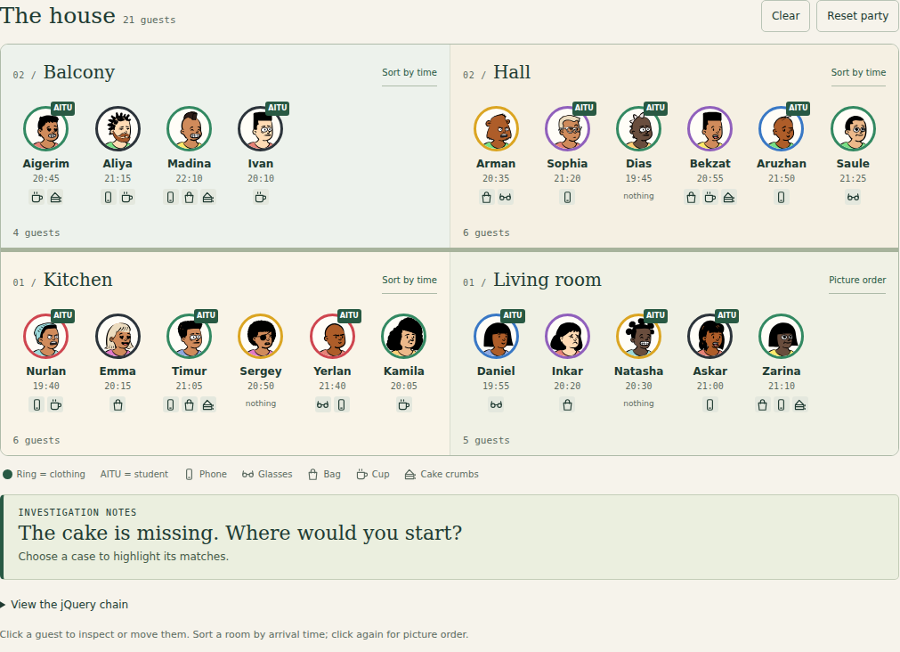
After five quick sort clicks, the living room ends in arrival order.Task 2 / TestingYerkebulan Abenov / IT-2511
Conclusion and resources
Conclusion
I learned how to combine selectors with traversal methods instead of searching the data array for every answer. I also learned why animation callbacks and stop() matter: moving cards changes both the layout and the data, so unfinished effects need a clear final state. The cake case helped me check all conditions together, especially the immediate AITU neighbour.
Resources
jQuery 3.7.1: jquery.com (MIT). Avatars: DiceBear Open Peeps by Pablo Stanley (CC0). Avatars and jQuery are stored locally.